RHYTHMER OS FOR MPC SAMPLE / FIRST SESSION
Your first groove
with RHYTHMER OS.
Drums, bass, FM-106 pad chords, acid and a Think break. Build four bars, shape the sound, balance the tracks and turn the loop into a mute jam.
140 BPM · C minor · 4 bars · 1/16 grid · 50% swing
The finished four-bar loop
Built on the Melodee foundation. Guide adapted for RHYTHMER OS; original authors, source & licence ↗.
The checklist stays in this browser. Tick each step after trying it on your device.
Push means click. Turn means rotate. Read the screen’s current B1–B3 labels. A + joins buttons pressed together; an arrow means the next action.
01 / FIRST GROOVE
Set up the session.
NEW PROJECT → TEMPO 140 → TRACK 2
Start an empty project. Hold TAP TEMPO until the Tempo screen opens (about half a second). Turn the encoder to 140.0 BPM; − / + change a whole BPM. Use SHIFT + encoder push to go back. Hold PAD BANK + Pad 2 to select track 2, then release PAD BANK. Choose PLUG-IN with the encoder and push to open the instrument browser.
02 / FIRST GROOVE
Load the drum instrument.
PLUG-IN → RHYTHMER KIT → PRESETS → DRUM-X / 909 CLUB
Load Rhythmer Kit, open PRESETS, select the original DRUM-X / 909 CLUB kit and press LOAD. Tap SAMPLE to return to the sound. Pad 1 is the kick, Pad 2 the snare and Pad 4 the closed hat.
03 / FIRST GROOVE
Make the pattern four bars.
SEQ → PATTERNS → LENGTH 4 / Q 1/16 / SWING 50%
On PATTERNS, use the labelled knobs for LENGTH 4 bars, Q 1/16 and SWING 50%. That is 64 sixteenth-note steps. Use the same length on tracks 3–6. Keep the project in C minor.
Return with SAMPLE before playing notes. The pads on PATTERNS select patterns; they do not play the kit.
04 / FIRST GROOVE
Record a broken drum groove.
SAMPLE → SEQ RECORD → PLAY → PADS 1 / 2 / 4
Press SEQ RECORD to arm, then PLAY. Record the kick over four bars. Leave playback running and add snare, then quieter hats on the next passes. Press SEQ RECORD to stop recording. The snare anchors beats 2 and 4; the kick moves around it.
| Bar | Kick · Pad 1 | Snare · Pad 2 | Closed hat · Pad 4 |
|---|---|---|---|
| 1 | Steps 1, 7, 11 | 5, 13 | 1, 3, 5, 7, 9, 11, 13, 15 |
| 2 | 1, 8, 11 | 5, 13; quiet ghost at 12 | Same, with softer alternate hits |
| 3 | 1, 7, 12 | 5, 13 | Same |
| 4 | 1, 7, 11 | 5, 13; quiet ghost at 12 | Same |
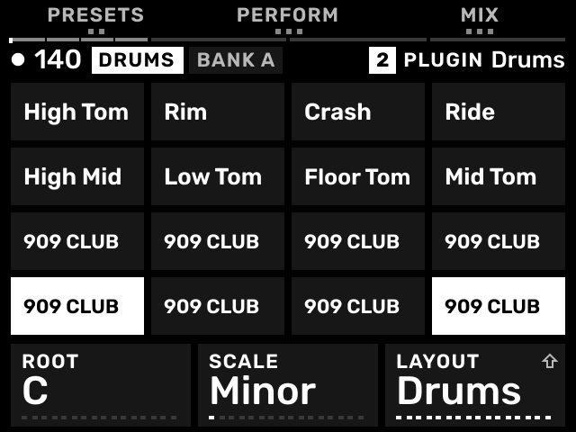
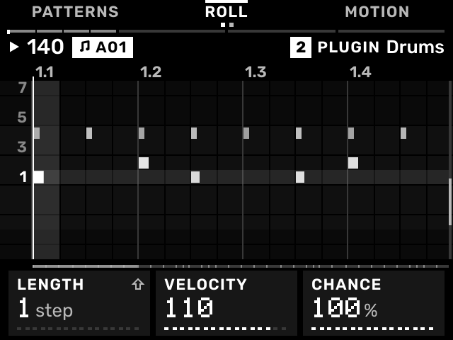
Step numbers in the table restart at 1 each bar. SHIFT + − undoes the last take. Keep ghost snares much quieter than the backbeat.
05 / FIRST GROOVE
Choose a bass with body.
PAD BANK + 3 → PLUG-IN → FMini-1 → SUB BASS
Select track 3 and load FMini-1. In PRESETS, load the original SUB BASS. Set its pattern to four bars. On KEYS, set ROOT C / SCALE Minor / LAYOUT Scale; use − / + to set OCT 1.
06 / FIRST GROOVE
Record the bassline.
SAMPLE → SEQ RECORD → PLAY THE ROOT AND FIFTH
For each bar, play its root on steps 1, 7 and 13, and its fifth on step 11. Keep the second root and fifth short; release before the next note. Press SEQ RECORD again to stop recording while playback continues. The changing root connects the bass to the chords we will add next.
| Bar | Root | Fifth |
|---|---|---|
| 1 | C2 | G2 |
| 2 | G#1 / A♭1 | D#2 / E♭2 |
| 3 | A#1 / B♭1 | F2 |
| 4 | G1 | D2 |
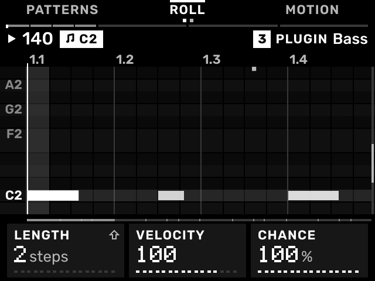
Keep the amp release short. The reference bass uses a track Filter / Low pass, CUTOFF 49%, RESO 8%. The next steps show how to add a track filter.
07 / FIRST GROOVE
Change an existing track to PLUG-IN.
PAD BANK + 4 → PAD FX + KNOB FX → B1 TRACK SETUP → TRACK TYPE
If track 4 is empty, choose PLUG-IN directly and continue to the next step. This walkthrough also shows how to replace an existing Sample Kit or MIDI track; you do not need to load a Sample Kit first. Press PAD FX and KNOB FX together to open TRACKS, then B1 TRACK SETUP. Select TRACK TYPE, choose PLUG-IN and continue to the instrument browser.
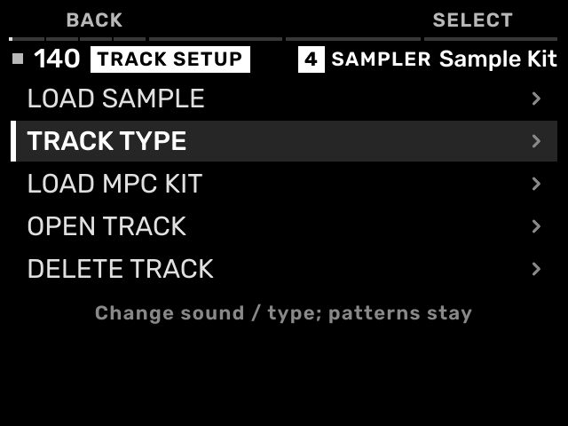
Changing type keeps patterns, speed, mixer and insert effects; instrument-specific settings are replaced. Use an empty pattern for this new chord part. To replace one plug-in with another, use CHANGE PLUG-IN. DELETE TRACK is a separate destructive action. SHIFT + encoder cancels or goes back.
08 / FIRST GROOVE
Load the FM-106 pad.
FM-106 → PRESETS → A68 Synth Pad → LOAD
Choose FM-106 and load its original A68 Synth Pad preset. Keep Voice Mode POLY I so four notes can sound together. On its sound controls, set VCF Cutoff 64 and VCF Resonance 8. These are the engine’s 0–127 values, distinct from track-effect percentages.
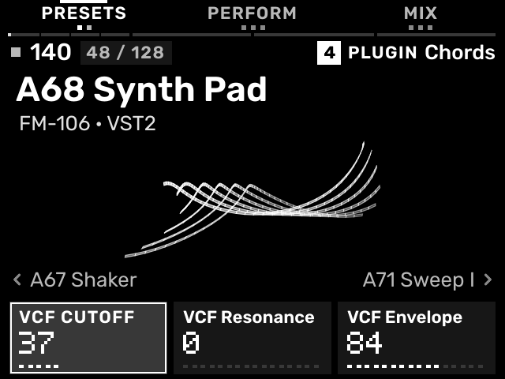
09 / FIRST GROOVE
Record four pad chords.
KEYS → C MINOR / SCALE / OCT 3 → SEQ RECORD
The pad supplies the harmony. Set KEYS to C minor / Scale / OCT 3. Hold each group of four pads together on beat 1, sustain for three beats, then release for beat 4. Record one chord per bar over the drums and bass. Press SEQ RECORD again after the four-bar take so further playing is not recorded.
| Bar | Chord | Notes | Physical pads |
|---|---|---|---|
| 1 | Cm7 | C4, E♭4, G4, B♭4 | 8 + 10 + 12 + 14 |
| 2 | A♭maj7 | A♭3, C4, E♭4, G4 | 6 + 8 + 10 + 12 |
| 3 | B♭add9 | B♭3, C4, D4, F4 | 7 + 8 + 9 + 11 |
| 4 | Gm7 | G3, B♭3, D4, F4 | 5 + 7 + 9 + 11 |
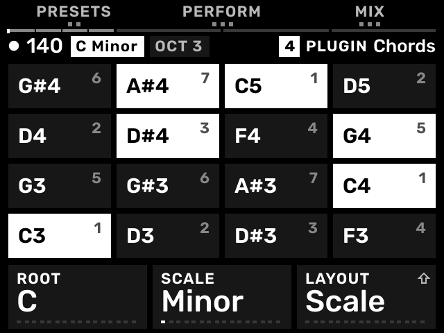
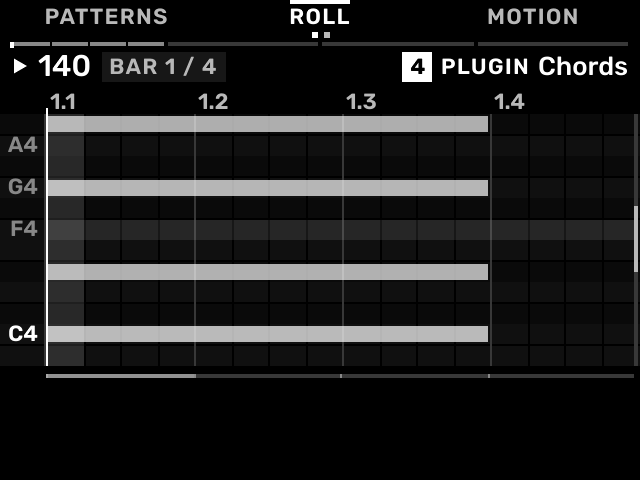
The UI spells flats as sharps: D# = E♭, G# = A♭, A# = B♭. These pad numbers depend on C minor / Scale / OCT 3. This is a four-pad performance, not an automatic chord mode.
10 / FIRST GROOVE
Shape the pad with a low-pass filter.
SHIFT + KNOB FX → TRACK FX → EMPTY SLOT → TONE → FILTER
From the selected instrument, press SHIFT + KNOB FX to open the effects rack. Stay on TRACK FX; repeated presses cycle through other scopes. Turn the encoder to an empty slot, push, choose Tone → Filter and add it. Use the labelled K1–K3 controls to set CUTOFF 64%, RESO 5%, TYPE Low pass. This softens the top of the pad without darkening the drums.
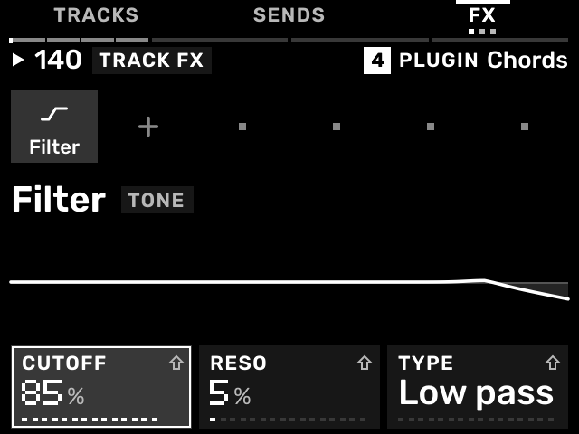
11 / FIRST GROOVE
Add Plate reverb behind the chords.
NEXT EMPTY TRACK SLOT → SPACE → PLATE → − / + FOR PARAMETER ROW
Add Space → Plate after the filter. Set the first row to SIZE 72%, DECAY about 1.9 s, DAMP 58%. Use − / + to show the second row; set MIX 18%, PREDELAY 12%, WIDTH 90%. Keep the dry chord in front and the tail in the gap after it.
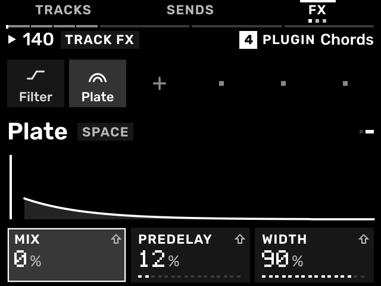
Original A68 Synth Pad · level-matched comparison
Adjusted engine tone + Filter + Plate · level-matched comparison
12 / FIRST GROOVE
Generate an acid phrase.
PAD BANK + 5 → ACID ENGINE / SQUELCH → PATTERNS → SHIFT + B3
Load Acid Engine on track 5 and choose SQUELCH. Set LENGTH to four bars, then open GEN from PATTERNS with SHIFT + B3. Start with DENSITY 70%, ACCENT 40%, SLIDE 25%. On the second settings page use one octave, base octave 2 and leave auto-mutate off. Choose GENERATE ACID, then APPLY.
13 / FIRST GROOVE
Edit it to answer the bass.
APPLY → ROLL → EDIT THE NOTES AND GATES
Generation is a starting point. Listen, undo and try again if it fights the bass. In this reference, the generated phrase was edited: roots follow C3 → G#2 → A#2 → G2, with short root/fifth/octave answers around steps 2, 4, 7, 10, 12 and 15. The same GEN settings will not produce an identical random phrase.
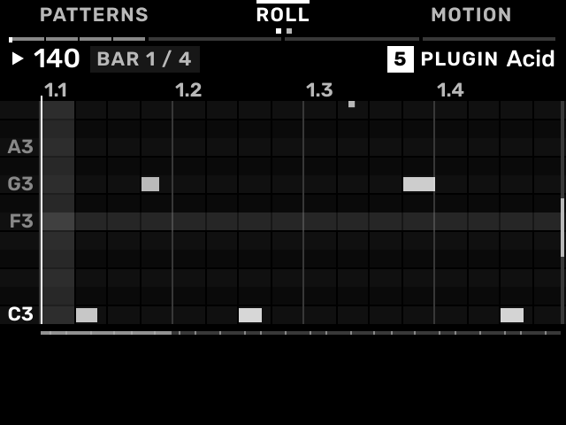
Keep distortion steady and move the cutoff within a modest range, roughly 41–52 / 127. Let resonance move the other way, around 85 down to 69 / 127. The phrase should add tension without covering the pad.
14 / FIRST GROOVE
Load the two-bar Think source.
PAD BANK + 6 → BREAK ENGINE → LOAD BARS 2 → BROWSE
Put think-160-preview.wav on your card. Load Break Engine on track 6 and set LOAD BARS 2 before browsing. Choose the file. It is a two-bar source at 160 BPM; keep this project at 140 BPM and let Break Engine sync it. Loading leaves BREAK GEN open with BRK PERF selected. Push to open it, then turn the encoder to page 3 SOURCE A/B to inspect the source. B1 GEN returns to BREAK GEN for the next step. During loading, B1 CANCEL or SHIFT + Push cancels assignment. To reopen later: SEQ / PATTERNS → SHIFT + B3 GEN → BREAK GEN → BRK PERF. Break navigation and six-page operating conditions.
Control reference below: the track number follows your selected track. Follow the written steps when the film starts on a different screen.
The tutorial WAV is a separate reference download, not part of the OS installation package.
15 / FIRST GROOVE
Build four bars from the slices.
BREAK GEN → APPLY → FOUR-BAR PATTERN → ROLL
Generate a starting break pattern and inspect it in ROLL. Use four bars: two passes through the two-bar source, then small slice changes near the end. Keep most of the first half recognisable. Use Undo when a variation loses the groove; random generation will not exactly reproduce the edited example.
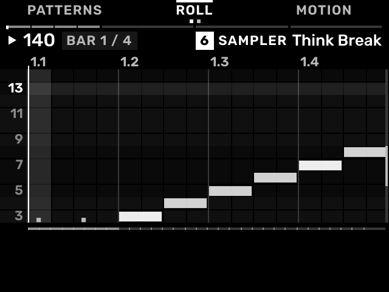
16 / FIRST GROOVE
Record a one-beat break manipulation.
BRK PERF → ROLLS → SEQ RECORD → PAD 7 / 1/8 UP
Open BRK PERF → ROLLS. With playback running, press SEQ RECORD. At bar 4, beat 4, hold Pad 7 / 1/8 UP. Release on the next downbeat and stop recording. The gesture becomes part of the performance pattern; keep the rest of the phrase clear.
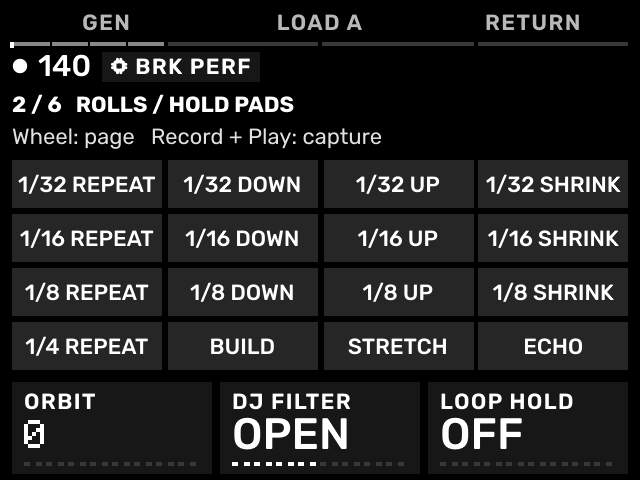
A track high-pass filter can make room below the break: start at CUTOFF 30%, RESO 3%, TYPE High pass. The kit supplies weight; the Think break supplies movement.
17 / FIRST GROOVE
Balance the parts in TRACKS.
PAD FX + KNOB FX → K1 TRACK / K2 LEVEL / K3 PAN
Open TRACKS with PAD FX + KNOB FX. Use K1 to select a track, K2 to change its LEVEL and K3 for PAN. Begin with the drums, add bass, then bring the pad up until the harmony is clear. Let acid and break sit around that foundation.
| Track | Part | LEVEL | PAN |
|---|---|---|---|
| 2 | Rhythmer Kit | 80 | C |
| 3 | FMini-1 bass | 78 | C |
| 4 | FM-106 chords | 82 | C |
| 5 | Acid | 62 | C |
| 6 | Think break | 68 | C |
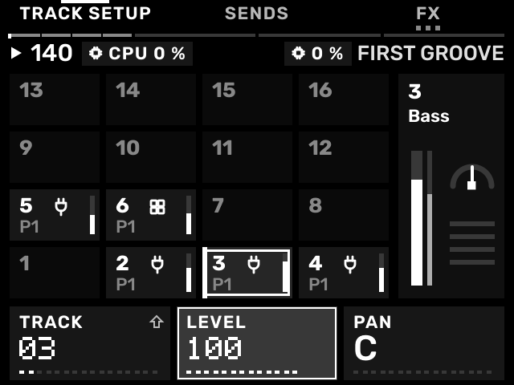
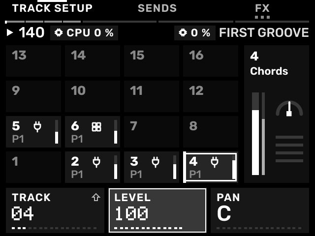
LEVEL is 0–127 and 100 is unity, not 100%. These values are starting points for these presets. Listen to the full mix, keep the low end clear and leave master headroom. A quieter pad can sound better than more reverb.
18 / FIRST GROOVE
Perform a track-mute jam.
STAY ON TRACKS → TAP MUTE → NUMBERED PADS 2–6
Stay on TRACKS so you mute whole tracks. A short tap of MUTE latches track-mute mode; each numbered pad then toggles that track. Do not hold PAD BANK here. Bring parts out and back on the downbeat. Mutes happen immediately, so your timing is the performance.
| Control | What it does |
|---|---|
| Tap MUTE, then Pad 2–6 | Toggle the corresponding track mute |
| Hold MUTE + numbered pad | Momentary access to track-mute controls |
| SHIFT + pad in latched mute mode | Toggle solo for that track |
| SHIFT + MUTE | Clear every track/pad mute and solo |
| Tap MUTE again | Exit mute mode; existing mutes remain |
| Four-bar phrase | Parts left playing |
|---|---|
| 1 | Drums |
| 2 | Drums + bass |
| 3 | Drums + bass + chords |
| 4 | All five |
| 5 | Bass + chords + Think break |
| 6 | Chords + acid + Think break |
| 7 | Drums + bass + acid |
| 8 | All five |
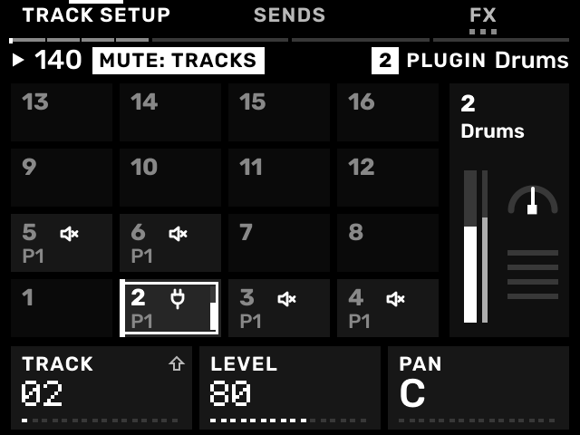
The full build and mute jam · 55 seconds
The video demonstrates the last four phrases as a continuous jam. The eight-phrase audio above also includes the build-up. On some instrument pages MUTE affects individual drum pads; use TRACKS for this guide. Clear mutes, then exit mute mode before playing notes again.
19 / FIRST GROOVE
Save the complete project.
CLEAR MUTES → EXIT MUTE MODE → SHIFT + PAD 16 → SAVE
Restore the five parts, stop playback and open the project menu with SHIFT + Pad 16. Press B1 SAVE and follow the naming prompt if this is the first save. Confirm the name and let the save finish. Open the project list with B2 OPEN to check that the project appears. Save the project, not just an instrument preset. Keep the Think WAV on the card and back up the project with its source samples.
Another starting point: GEN
Save this project first. In a separate project or an unused group such as tracks 9–12, GEN can draft an idea using SOUND + MIDI. Listen, choose the sounds and edit what you keep. This is optional; it does not replace the groove you just made.
If you get stuck
- Pads change patterns instead of playing notes: press SAMPLE to return to the selected sound.
- A track is silent: check its number and loaded sound, press SHIFT + MUTE to clear mutes/solos, then check LEVEL on TRACKS.
- A take went wrong: stop recording and use SHIFT + − to undo; SHIFT + + redoes supported edits.
- A note keeps sounding: SHIFT + STOP sends All Notes Off.
- Save shows NO CARD: make sure the SD card is inserted and available before saving. See projects and files.
About this example.
The common workflow and manual foundation come from Melodee’s guide by Kerem Kiliç (Ellic Studio) and contributors. RHYTHMER-specific instructions, the musical example and this adaptation are by Jazzy Rhythmer. Documentation: AGPL-3.0-only; licence.
Screen and audio notes
Screens and animations are rendered by the published 0.4.0-beta.3-r2 UI using this example’s notes and settings, then composited into the device photo for the films. They are not a camera recording of hardware. Audio uses native instruments rendered offline with effects and mix balancing. Generators are random; the demonstrated phrases include manual edits. Original presets retain their names. Engine code, presets, samples and hardware marks retain their own rights and notices.
Example provenance ↗